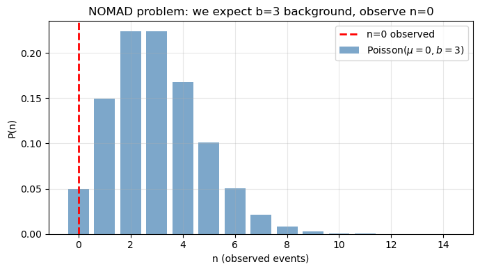
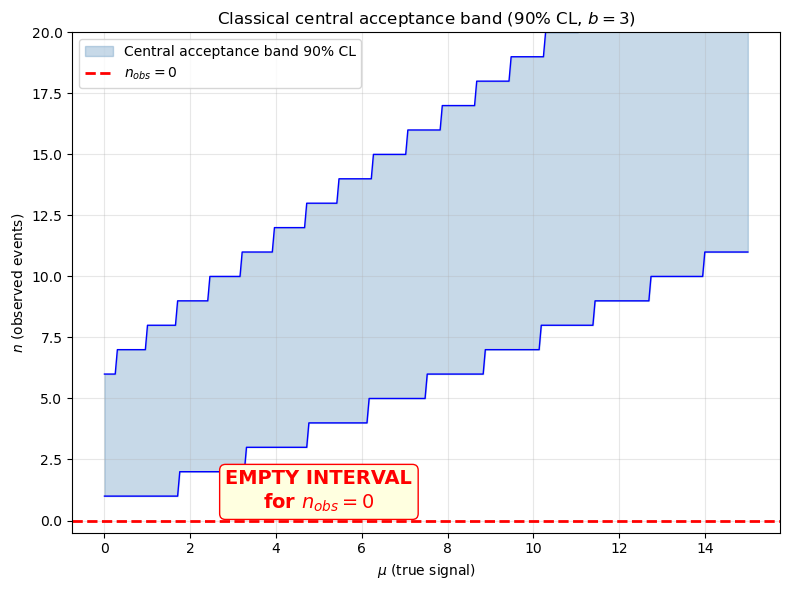
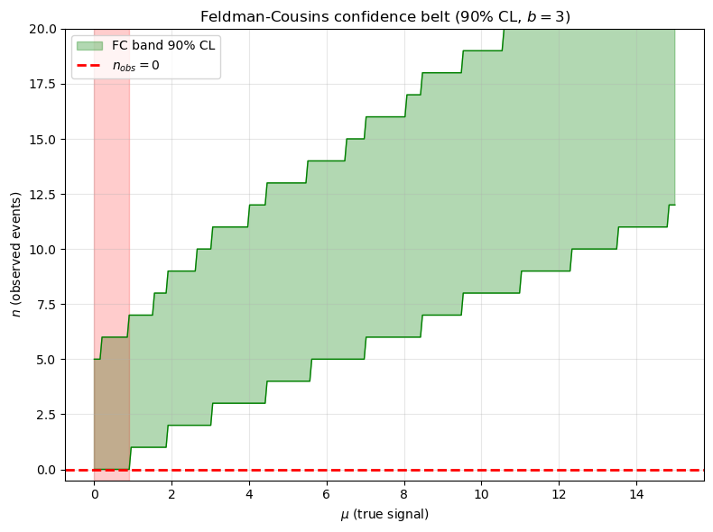
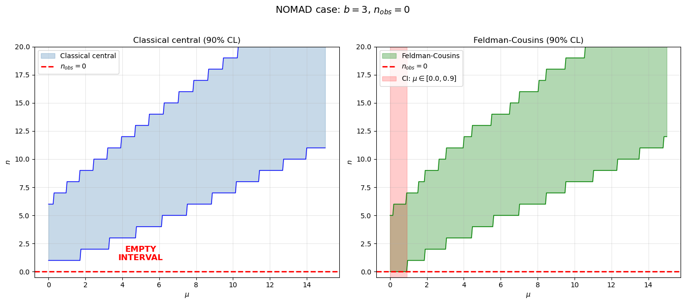
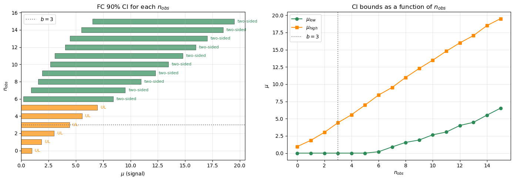
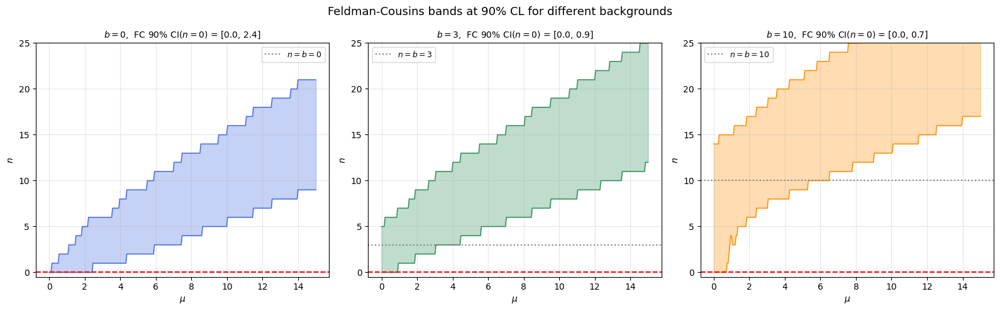
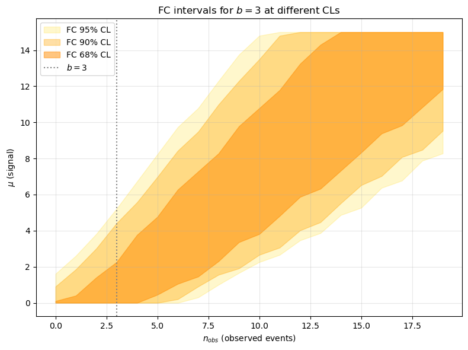

Feldman-Cousins confidence intervals#
Motivation: the NOMAD problem and empty intervals#
This notebook presents the Feldman-Cousins method (Phys. Rev. D 57, 3873, 1998) for constructing unified confidence intervals in Poisson counting experiments.
Contents:
The NOMAD problem: expecting background and seeing nothing
Classical Neyman intervals and their pathologies
The Feldman-Cousins ordering principle
Construction of the confidence belt
Numerical examples
Setup#
%matplotlib inline
import numpy as np
import matplotlib.pyplot as plt
import scipy.stats as stats
import warnings
warnings.filterwarnings('ignore')
import os, sys
from pathlib import Path
_env = os.environ.get('FANAL_ROOT') or os.environ.get('USCFANALDIR')
if _env and Path(_env, 'data').is_dir():
rootpath = str(Path(_env).resolve())
else:
rootpath = str(next(p for p in [Path.cwd(), *Path.cwd().parents]
if (p / 'data').is_dir() and (p / 'ana').is_dir()))
if rootpath not in sys.path:
sys.path.insert(0, rootpath)
import core.pltext as pltext
import core.confint as confint
pltext.style()
print('Fanal root:', rootpath)
Fanal root: /Users/hernando/work/docencia/FPII-fanal/student
1. The NOMAD problem#
The NOMAD experiment (CERN, search for \(\nu_\mu \to \nu_\tau\) oscillations) expected to observe \(b = 3\) background events in its signal region.
Question: What happens if we observe \(n = 0\) events?
With \(b = 3\) expected background events, the probability of observing zero events is:
For \(\mu = 0\) (no signal): \(P(0 \mid 3) = e^{-3} \approx 0.05\).
Unlikely, but not impossible. This scenario — expecting background and seeing nothing — creates a serious problem with classical confidence intervals.
# Probability of observing n=0 with b=3 expected background events (no signal)
b_nomad = 3.0
p_zero = stats.poisson.pmf(0, b_nomad)
print('P(n=0 | mu=0, b={:.0f}) = {:.4f} ({:.1f}%)'.format(b_nomad, p_zero, 100*p_zero))
# Poisson distribution for b=3
ns_plot = np.arange(0, 15)
plt.figure(figsize=(7, 4))
plt.bar(ns_plot, stats.poisson.pmf(ns_plot, b_nomad), color='steelblue', alpha=0.7,
label=r'Poisson($\mu=0, b=3$)')
plt.axvline(0, color='red', ls='--', lw=2, label='n=0 observed')
plt.xlabel('n (observed events)')
plt.ylabel('P(n)')
plt.title('NOMAD problem: we expect b=3 background, observe n=0')
plt.legend()
plt.grid(alpha=0.3)
plt.tight_layout()
P(n=0 | mu=0, b=3) = 0.0498 (5.0%)

2. The problem with classical intervals#
Neyman construction for Poisson#
For a Poisson process with mean \(\mu + b\) (signal + background), the classical central confidence interval at level \(\alpha\) is constructed as follows:
For each true value of \(\mu\), we find the acceptance interval \([n_1, n_2]\) such that:
splitting the remaining probability equally between both tails:
The confidence interval for an observed \(n\) is obtained by inverting this band: the set of \(\mu\) values whose acceptance intervals contain \(n_{obs}\).
The problem: empty intervals#
With the central ordering, if \(b = 3\) and we observe \(n = 0\):
The maximum likelihood estimator is \(\hat{\mu} = n - b = 0 - 3 = -3\) (unphysical!)
The central interval at 90% CL turns out to be empty: there is no \(\mu \geq 0\) whose acceptance interval includes \(n = 0\)
This is absurd: we observed real data and cannot say anything about \(\mu\).
# Classical CENTRAL interval construction for Poisson with background
# Demonstration of the empty interval problem
def classical_central_interval(mu, bkg, cl=0.90, nmax=30):
"""Classical central acceptance interval for signal mu with background bkg.
Splits probability (1-cl)/2 in each tail.
Returns (n_low, n_high).
"""
alpha = 1 - cl
ns = np.arange(0, nmax + 1)
pmf = stats.poisson.pmf(ns, mu + bkg)
cdf = np.cumsum(pmf)
# Lower tail: P(n < n_low) <= alpha/2
n_low = 0
while n_low < nmax and cdf[n_low] < alpha / 2:
n_low += 1
# Upper tail: P(n > n_high) <= alpha/2 => P(n <= n_high) >= 1 - alpha/2
n_high = 0
while n_high < nmax and cdf[n_high] < 1 - alpha / 2:
n_high += 1
return n_low, n_high
# Build the classical central band for b=3, 90% CL
bkg = 3.0
cl = 0.90
mus_grid = np.linspace(0, 15, 300)
n_lows_classic = []
n_highs_classic = []
for mu in mus_grid:
nl, nh = classical_central_interval(mu, bkg, cl)
n_lows_classic.append(nl)
n_highs_classic.append(nh)
n_lows_classic = np.array(n_lows_classic)
n_highs_classic = np.array(n_highs_classic)
# Invert: for n_obs=0, find which mu values contain it
n_obs_test = 0
mask = (n_lows_classic <= n_obs_test) & (n_highs_classic >= n_obs_test)
plt.figure(figsize=(8, 6))
plt.fill_between(mus_grid, n_lows_classic, n_highs_classic, alpha=0.3, color='steelblue',
label='Central acceptance band 90% CL')
plt.plot(mus_grid, n_lows_classic, 'b-', lw=1)
plt.plot(mus_grid, n_highs_classic, 'b-', lw=1)
plt.axhline(n_obs_test, color='red', ls='--', lw=2, label='$n_{obs} = 0$')
if np.any(mask):
mu_low = np.min(mus_grid[mask])
mu_high = np.max(mus_grid[mask])
plt.axvspan(mu_low, mu_high, alpha=0.3, color='red', label=r'CI: [{:.1f}, {:.1f}]'.format(mu_low, mu_high))
print('Classical central interval for n_obs=0: [{:.2f}, {:.2f}]'.format(mu_low, mu_high))
else:
plt.text(5, 0.5, 'EMPTY INTERVAL\nfor $n_{obs}=0$', fontsize=14, color='red',
ha='center', fontweight='bold',
bbox=dict(boxstyle='round', facecolor='lightyellow', edgecolor='red'))
print('EMPTY INTERVAL! No mu >= 0 whose central acceptance band includes n=0')
plt.xlabel(r'$\mu$ (true signal)')
plt.ylabel(r'$n$ (observed events)')
plt.title(r'Classical central acceptance band (90% CL, $b={:.0f}$)'.format(bkg))
plt.legend(loc='upper left')
plt.grid(alpha=0.3)
plt.ylim(-0.5, 20)
plt.tight_layout()
EMPTY INTERVAL! No mu >= 0 whose central acceptance band includes n=0

The flip-flopping problem#
Beyond empty intervals, classical intervals suffer from flip-flopping:
If the experimenter observes \(n\) large (relative to \(b\)), they report a central two-sided interval for \(\mu\).
If they observe \(n\) small (compatible with or below \(b\)), they switch to a one-sided upper limit.
This a posteriori decision (based on the data) violates frequentist coverage. The 90% confidence level no longer means the interval contains the true value 90% of the time, because the construction rule changes depending on the outcome.
Scenario |
Classical decision |
Problem |
|---|---|---|
\(n \gg b\) |
Two-sided interval |
OK |
\(n \approx b\) |
Two-sided or upper limit? |
Ambiguity |
\(n < b\) |
Upper limit |
Under-coverage |
\(n = 0, b > 0\) |
Upper limit… or empty? |
Empty interval |
Feldman and Cousins solve both problems with a single procedure that automatically transitions between upper limits and two-sided intervals.
3. The Feldman-Cousins ordering method#
Key idea: ordering by likelihood ratio#
The Neyman construction requires choosing which values of \(n\) to include first in the acceptance interval of each \(\mu\). The classical central ordering splits the tails equally. Feldman-Cousins proposes a different criterion: ordering by the likelihood ratio.
For each possible observation \(n\), compute:
where:
\(P(n \mid \mu) = \frac{(\mu + b)^n \, e^{-(\mu+b)}}{n!}\) is the Poisson probability of observing \(n\) given \(\mu\) and \(b\)
\(\hat{\mu}_{\text{best}} = \max(n - b, \, 0)\) is the best physical estimator of \(\mu\) given \(n\) (constrained to \(\mu \geq 0\), since the signal cannot be negative)
\(P(n \mid \hat{\mu}_{\text{best}})\) is the probability evaluated at the best fit
Equivalently, we use the test statistic:
Values of \(n\) with the smallest \(t\) (largest \(R\)) are included first.
Step-by-step algorithm#
For a fixed value of \(\mu\) and background \(b\), at confidence level CL:
For each \(n = 0, 1, 2, \ldots, n_{\max}\):
Compute \(\hat{\mu}_{\text{best}}(n) = \max(n - b, 0)\)
Compute \(R(n) = P(n \mid \mu + b) \,/\, P(n \mid \hat{\mu}_{\text{best}} + b)\)
Sort the values of \(n\) from largest to smallest \(R\) (equivalently, from smallest to largest \(t\))
Include values of \(n\) in that order, accumulating \(P(n \mid \mu + b)\), until the cumulative probability reaches CL
The acceptance interval is \([n_{\min}, n_{\max}]\) of the included values
Repeat for each \(\mu\) on a fine grid
Invert: for a given \(n_{\text{obs}}\), the confidence interval is the set of \(\mu\) values whose acceptance intervals contain \(n_{\text{obs}}\)
Worked example: FC ordering for \(\mu = 1\), \(b = 3\)#
Let us walk through step by step how FC selects which values of \(n\) to include in the acceptance interval.
# Step-by-step FC ordering example
mu_example = 1.0
bkg = 3.0
cl = 0.90
ns = np.arange(0, 15)
# Step 1: for each n, compute mu_best and the probabilities
mu_best = np.maximum(ns - bkg, 0.) # physical estimator
p_mu = stats.poisson.pmf(ns, mu_example + bkg) # P(n | mu + b)
p_best = stats.poisson.pmf(ns, mu_best + bkg) # P(n | mu_best + b)
# Likelihood ratio and test statistic t
R = p_mu / p_best
t = -2 * (np.log(p_mu + 1e-300) - np.log(p_best + 1e-300))
# Table with all values
print(' n | mu_best | P(n|mu+b) | P(n|best) | R | t')
print('-----|---------|------------|------------|----------|--------')
for i, n in enumerate(ns):
print(' {:2d} | {:4.1f} | {:.6f} | {:.6f} | {:.4f} | {:6.3f}'.format(
n, mu_best[i], p_mu[i], p_best[i], R[i], t[i]))
n | mu_best | P(n|mu+b) | P(n|best) | R | t
-----|---------|------------|------------|----------|--------
0 | 0.0 | 0.018316 | 0.049787 | 0.3679 | 2.000
1 | 0.0 | 0.073263 | 0.149361 | 0.4905 | 1.425
2 | 0.0 | 0.146525 | 0.224042 | 0.6540 | 0.849
3 | 0.0 | 0.195367 | 0.224042 | 0.8720 | 0.274
4 | 1.0 | 0.195367 | 0.195367 | 1.0000 | -0.000
5 | 2.0 | 0.156293 | 0.175467 | 0.8907 | 0.231
6 | 3.0 | 0.104196 | 0.160623 | 0.6487 | 0.866
7 | 4.0 | 0.059540 | 0.149003 | 0.3996 | 1.835
8 | 5.0 | 0.029770 | 0.139587 | 0.2133 | 3.090
9 | 6.0 | 0.013231 | 0.131756 | 0.1004 | 4.597
10 | 7.0 | 0.005292 | 0.125110 | 0.0423 | 6.326
11 | 8.0 | 0.001925 | 0.119378 | 0.0161 | 8.255
12 | 9.0 | 0.000642 | 0.114368 | 0.0056 | 10.367
13 | 10.0 | 0.000197 | 0.109940 | 0.0018 | 12.645
14 | 11.0 | 0.000056 | 0.105989 | 0.0005 | 15.077
# Steps 2-3: Sort by t (smallest first) and accumulate probability
order = np.argsort(t)
cum_prob = 0.
included = []
print('FC inclusion order (mu={:.1f}, b={:.1f}, CL={:.0f}%):'.format(mu_example, bkg, 100*cl))
print(' step | n | t | P(n|mu+b) | cumulative P | included')
print('-------|-----|--------|-------------|---------------|----------')
for step, idx in enumerate(order):
cum_prob += p_mu[idx]
if len(included) == 0 or (cum_prob - p_mu[idx]) < cl:
included.append(ns[idx])
mark = '<--'
else:
included.append(ns[idx])
mark = '<-- (reaches CL)'
print(' {:2d} | {:2d} | {:5.3f} | {:.6f} | {:.6f} | {:s}'.format(
step, ns[idx], t[idx], p_mu[idx], cum_prob, mark))
if cum_prob >= cl:
break
print()
print('FC acceptance interval: [{:d}, {:d}]'.format(min(included), max(included)))
print('Cumulative probability: {:.4f} >= {:.2f}'.format(cum_prob, cl))
FC inclusion order (mu=1.0, b=3.0, CL=90%):
step | n | t | P(n|mu+b) | cumulative P | included
-------|-----|--------|-------------|---------------|----------
0 | 4 | -0.000 | 0.195367 | 0.195367 | <--
1 | 5 | 0.231 | 0.156293 | 0.351660 | <--
2 | 3 | 0.274 | 0.195367 | 0.547027 | <--
3 | 2 | 0.849 | 0.146525 | 0.693552 | <--
4 | 6 | 0.866 | 0.104196 | 0.797748 | <--
5 | 1 | 1.425 | 0.073263 | 0.871010 | <--
6 | 7 | 1.835 | 0.059540 | 0.930551 | <--
FC acceptance interval: [1, 7]
Cumulative probability: 0.9306 >= 0.90
Key observation: Note that for \(n < b\) (e.g. \(n = 0, 1, 2\)), the estimator \(\hat\mu_\text{best} = 0\) (it saturates at the physical boundary), and the ratio \(R\) is not necessarily small. This allows \(n=0\) to be included in the acceptance interval of small values of \(\mu\), resolving the empty interval problem.
4. Building the full FC confidence belt#
# Build the FC confidence belt for the NOMAD case: b=3, 90% CL
bkg = 3.0
cl = 0.90
mus = np.linspace(0., 15., 300)
# Use the confint module from the project
n0s, n1s = confint.fc_confband(mus, bkg, cl=cl)
# Also build the confidence interval function
fc_90 = confint.get_fc_confinterval(mus, bkg, cl=cl)
plt.figure(figsize=(8, 6))
# FC acceptance band
plt.fill_between(mus, n0s, n1s, alpha=0.3, color='green',
label='FC band 90% CL')
plt.plot(mus, n0s, 'g-', lw=1)
plt.plot(mus, n1s, 'g-', lw=1)
# Case n_obs = 0
plt.axhline(0, color='red', ls='--', lw=2, label='$n_{obs} = 0$')
ci_0 = fc_90(0)
plt.axvspan(ci_0[0], ci_0[1], alpha=0.2, color='red')
print('FC 90% CI for n_obs=0, b={:.0f}: mu in [{:.2f}, {:.2f}]'.format(bkg, *ci_0))
print(' -> Upper limit: mu < {:.2f}'.format(ci_0[1]))
# Also show n_obs = 1, 2, 3
for n_test in [0, 1, 2, 3, 5, 8]:
ci = fc_90(n_test)
print(' n_obs = {:d}: mu in [{:.2f}, {:.2f}]'.format(n_test, *ci))
plt.xlabel(r'$\mu$ (true signal)')
plt.ylabel(r'$n$ (observed events)')
plt.title(r'Feldman-Cousins confidence belt (90% CL, $b={:.0f}$)'.format(bkg))
plt.legend(loc='upper left')
plt.grid(alpha=0.3)
plt.ylim(-0.5, 20)
plt.tight_layout()
FC 90% CI for n_obs=0, b=3: mu in [0.00, 0.90]
-> Upper limit: mu < 0.90
n_obs = 0: mu in [0.00, 0.90]
n_obs = 1: mu in [0.00, 1.86]
n_obs = 2: mu in [0.00, 3.01]
n_obs = 3: mu in [0.00, 4.41]
n_obs = 5: mu in [0.00, 6.97]
n_obs = 8: mu in [1.56, 10.99]

Comparison: classical central vs Feldman-Cousins#
Let us overlay both bands to understand the difference.
# Side-by-side comparison of both bands
fig, axes = plt.subplots(1, 2, figsize=(14, 6))
# Left panel: Classical central
ax = axes[0]
ax.fill_between(mus_grid, n_lows_classic, n_highs_classic, alpha=0.3, color='steelblue',
label='Classical central')
ax.plot(mus_grid, n_lows_classic, 'b-', lw=1)
ax.plot(mus_grid, n_highs_classic, 'b-', lw=1)
ax.axhline(0, color='red', ls='--', lw=2, label='$n_{obs} = 0$')
ax.set_xlabel(r'$\mu$'); ax.set_ylabel(r'$n$')
ax.set_title('Classical central (90% CL)')
ax.set_ylim(-0.5, 20); ax.legend(loc='upper left'); ax.grid(alpha=0.3)
ax.text(5, 1, 'EMPTY\nINTERVAL', fontsize=12, color='red', ha='center', fontweight='bold')
# Right panel: Feldman-Cousins
ax = axes[1]
ax.fill_between(mus, n0s, n1s, alpha=0.3, color='green', label='Feldman-Cousins')
ax.plot(mus, n0s, 'g-', lw=1)
ax.plot(mus, n1s, 'g-', lw=1)
ax.axhline(0, color='red', ls='--', lw=2, label='$n_{obs} = 0$')
ci_0 = fc_90(0)
ax.axvspan(ci_0[0], ci_0[1], alpha=0.2, color='red',
label=r'CI: $\mu \in [{:.1f}, {:.1f}]$'.format(*ci_0))
ax.set_xlabel(r'$\mu$'); ax.set_ylabel(r'$n$')
ax.set_title('Feldman-Cousins (90% CL)')
ax.set_ylim(-0.5, 20); ax.legend(loc='upper left'); ax.grid(alpha=0.3)
plt.suptitle(r'NOMAD case: $b = {:.0f}$, $n_{{obs}} = 0$'.format(bkg), fontsize=14, y=1.02)
plt.tight_layout()

5. Automatic transition: upper limit ↔ two-sided interval#
One of the main virtues of FC is that it does not require deciding a priori whether to report an upper limit or a two-sided interval. The transition occurs naturally:
For small \(n_\text{obs}\) (less than or close to \(b\)): the FC interval is asymmetric and starts at \(\mu = 0\) – it acts as an upper limit
For large \(n_\text{obs}\) (well above \(b\)): the FC interval centres around \(\hat\mu = n - b\) – it acts as a two-sided interval
This solves the flip-flopping problem: the same procedure, applied blindly before seeing the data, produces the correct type of interval.
# Demonstration of the upper limit → two-sided interval transition
bkg = 3.0
mus = np.linspace(0., 20., 400)
fc_90 = confint.get_fc_confinterval(mus, bkg, cl=0.90)
ns_demo = np.arange(0, 16)
cis = [fc_90(n) for n in ns_demo]
fig, axes = plt.subplots(1, 2, figsize=(14, 5))
# Left panel: FC intervals for each n_obs
ax = axes[0]
for i, n in enumerate(ns_demo):
ci = cis[i]
color = 'darkorange' if ci[0] == 0 else 'seagreen'
tipo = 'UL' if ci[0] == 0 else 'two-sided'
ax.barh(n, ci[1] - ci[0], left=ci[0], height=0.6, color=color, alpha=0.7,
edgecolor='k', lw=0.5)
ax.text(ci[1] + 0.3, n, tipo, va='center', fontsize=8, color=color)
ax.axhline(bkg, color='gray', ls=':', lw=1.5, label='$b = {:.0f}$'.format(bkg))
ax.set_ylabel(r'$n_{obs}$')
ax.set_xlabel(r'$\mu$ (signal)')
ax.set_title('FC 90% CI for each $n_{obs}$')
ax.legend()
ax.grid(alpha=0.3)
# Right panel: interval bounds
ax2 = axes[1]
mu_lows = [ci[0] for ci in cis]
mu_highs = [ci[1] for ci in cis]
ax2.plot(ns_demo, mu_lows, 'o-', color='seagreen', label=r'$\mu_{low}$')
ax2.plot(ns_demo, mu_highs, 's-', color='darkorange', label=r'$\mu_{high}$')
ax2.axvline(bkg, color='gray', ls=':', lw=1.5, label='$b = {:.0f}$'.format(bkg))
ax2.set_xlabel(r'$n_{obs}$')
ax2.set_ylabel(r'$\mu$')
ax2.set_title(r'CI bounds as a function of $n_{obs}$')
ax2.legend()
ax2.grid(alpha=0.3)
plt.tight_layout()
print('Transition from upper limit to two-sided interval:')
for n in ns_demo:
ci = fc_90(n)
tipo = 'Upper limit' if ci[0] == 0 else 'Two-sided'
print(' n={:2d}: mu in [{:5.2f}, {:5.2f}] ({:s})'.format(n, ci[0], ci[1], tipo))
Transition from upper limit to two-sided interval:
n= 0: mu in [ 0.00, 0.95] (Upper limit)
n= 1: mu in [ 0.00, 1.85] (Upper limit)
n= 2: mu in [ 0.00, 3.01] (Upper limit)
n= 3: mu in [ 0.00, 4.41] (Upper limit)
n= 4: mu in [ 0.00, 5.56] (Upper limit)
n= 5: mu in [ 0.00, 6.97] (Upper limit)
n= 6: mu in [ 0.20, 8.42] (Two-sided)
n= 7: mu in [ 0.90, 9.52] (Two-sided)
n= 8: mu in [ 1.55, 10.98] (Two-sided)
n= 9: mu in [ 1.90, 12.28] (Two-sided)
n=10: mu in [ 2.66, 13.48] (Two-sided)
n=11: mu in [ 3.06, 14.79] (Two-sided)
n=12: mu in [ 4.01, 15.99] (Two-sided)
n=13: mu in [ 4.46, 17.04] (Two-sided)
n=14: mu in [ 5.51, 18.50] (Two-sided)
n=15: mu in [ 6.52, 19.50] (Two-sided)

6. Effect of background on the FC belt#
How does the confidence belt change with the background level? Let us compare \(b = 0\), \(b = 3\), and \(b = 10\).
# Comparison of FC bands for different background levels
fig, axes = plt.subplots(1, 3, figsize=(16, 5))
bkgs = [0., 3., 10.]
colors = ['royalblue', 'seagreen', 'darkorange']
mus_fine = np.linspace(0., 15., 300)
for ax, b, col in zip(axes, bkgs, colors):
fc = confint.get_fc_confinterval(mus_fine, b, cl=0.90)
n0, n1 = confint.fc_confband(mus_fine, b, cl=0.90)
ax.fill_between(mus_fine, n0, n1, alpha=0.3, color=col)
ax.plot(mus_fine, n0, '-', color=col, lw=1)
ax.plot(mus_fine, n1, '-', color=col, lw=1)
# Show n=b line
ax.axhline(b, color='gray', ls=':', label='$n = b = {:.0f}$'.format(b))
# CI for n_obs = 0
ci = fc(0)
ax.axhline(0, color='red', ls='--', lw=1.5)
ax.set_title('$b = {:.0f}$, FC 90% CI($n=0$) = [{:.1f}, {:.1f}]'.format(b, *ci), fontsize=10)
ax.set_xlabel(r'$\mu$')
ax.set_ylabel(r'$n$')
ax.set_ylim(-0.5, 25)
ax.legend(fontsize=9)
ax.grid(alpha=0.3)
plt.suptitle('Feldman-Cousins bands at 90% CL for different backgrounds', fontsize=13)
plt.tight_layout()

7. Comparison of confidence levels#
Let us see how the FC intervals change at 68%, 90%, and 95% CL for the \(b = 3\) case.
# FC bands at different confidence levels
bkg = 3.0
mus = np.linspace(0., 15., 300)
ns_range = np.arange(0, 20)
cls = [0.95, 0.90, 0.68]
alphas = [0.2, 0.35, 0.5]
colors = ['gold', 'orange', 'darkorange']
plt.figure(figsize=(8, 6))
for cl, alpha, col in zip(cls, alphas, colors):
fc = confint.get_fc_confinterval(mus, bkg, cl=cl)
ys = fc(ns_range)
plt.fill_between(ns_range, ys[0], ys[1], alpha=alpha, color=col,
label='FC {:.0f}% CL'.format(100*cl))
plt.axvline(bkg, color='gray', ls=':', label='$b = {:.0f}$'.format(bkg))
plt.xlabel(r'$n_{obs}$ (observed events)')
plt.ylabel(r'$\mu$ (signal)')
plt.title(r'FC intervals for $b = {:.0f}$ at different CLs'.format(bkg))
plt.legend()
plt.grid(alpha=0.3)
plt.tight_layout()
# Summary table for n_obs = 0
print('\nSummary for n_obs = 0, b = {:.0f}:'.format(bkg))
for cl in cls:
fc = confint.get_fc_confinterval(mus, bkg, cl=cl)
ci = fc(0)
print(' {:2.0f}% CL: mu in [{:.2f}, {:.2f}] (UL = {:.2f})'.format(100*cl, ci[0], ci[1], ci[1]))
Summary for n_obs = 0, b = 3:
95% CL: mu in [0.00, 1.61] (UL = 1.61)
90% CL: mu in [0.00, 0.90] (UL = 0.90)
68% CL: mu in [0.00, 0.10] (UL = 0.10)

Summary#
Aspect |
Classical central interval |
Feldman-Cousins |
|---|---|---|
Ordering |
Equal tails \((1-\alpha)/2\) |
Likelihood ratio \(R(n)\) |
\(n \ll b\) |
Empty interval |
Upper limit (valid) |
\(n \gg b\) |
Two-sided interval |
Two-sided interval |
Prior decision |
Must choose UL vs two-sided |
Automatic |
Coverage |
Violated by flip-flopping |
Guaranteed by construction |
Physical constraint \(\mu \geq 0\) |
Not incorporated |
Built in via \(\hat\mu_{\text{best}}\) |
Reference: G.J. Feldman and R.D. Cousins, “Unified approach to the classical statistical analysis of small signals”, Phys. Rev. D 57, 3873 (1998). [arXiv:physics/9711021]